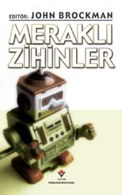

Bir İnsanı Bilim İnsanı Yapan Şey
Altta alıntılar vereceğim makale, TÜBİTAK tarafından yayınlanan Meraklı Zihinler adlı kitaptan alınmıştır. Kitap, başarılı bilim insanlarının özyaşamöykülerinden oluşuyor. İçlerinden bana göre en güzel olanı da Vilayanur S. Ramachandran'ın yazmış olduğu makale. Alıntılar da o makaleden. Eğer kalanını merak ederseniz kitabı okumanızı çok çok tavsiye ederim. Bu kadarını dahi alıntılamam doğru değil, ama kalanının merak edilmesine reklam olacağını ümit ediyorum. 247 sayfa ve üslubu çok güzel. Özel olarak bir bilim alanına hitap etmiyor, her meraklıya bir kıssa çıkar.
Bir İnsanı Bilim İnsanı Yapan Şey
V. S. Ramachandran
Türkçe çevirisi: Ülker İnce
Bilim insanlığını meslek olarak seçmeniz için sizde olması gereken en önemli tek nitelik nedir? İnsanlar bu soruya çoğu kez "araştırma merakı" diye yanıt verirler ama bütün hikâye bundan ibaret olmasa gerek. Ne de olsa herkes bir dereceye kadar meraklıdır ama herkesin yazgısı bilim insanı olmak değildir. Ben saplantılı, tutkulu, neredeyse hastalık derecesinde araştırıcı olmak gerektiğini iddia edeceğim. Ya da, bir zamanlar Peter Medawar'ın dediği gibi, "anlaşılmayan bir şey karşısında fiziksel bir rahatsızlık duymanız" gerekir. Merak hayatınıza egemen olmalıdır.
Bilim doğayla aranızda yaşanan bir aşktır -bir aşk serüveninin bütün tutkulu niteliklerine sahiptir; çalkantı ve insanın genellikle romantik aşkla birleştirdiği tutkulu özlem. Ama bu özlem nereden gelir? Bir yere kadar bu belki de doğuştan gelme bir kişilik özelliğidir. Ama daha önemlisi, sizin ilk ilişkilerinizden doğar. Başarının en iyi formülünün, yaptıkları işe tutkuyla bağlı olan, o işten heyecan duyan insanların çevresinde bulunmak olduğunu, çünkü heyecan kadar bulaşıcı bir şeyin bulunmadığını ben çok erken keşfettim. Bu bakımdan çok şanslıydım. [...] Evde de, bilime meraklı amcalarımın; edebiyat ve şiir, özellikle de Shakespeare tutkusunu bana aşılayan erkek kardeşim Ravi'nin etkisi bana bulaştı. Bilimle şiirin ortak noktaları çoğumuzun sandığından daha fazladır; her iki girişim de en aykırı düşünceleri yanyana getirmeyi ve dünyaya biraz romantik bir gözle bakmayı gerektirir.
Benim annem ve babam gibi, insanı sürekli arkasından iten, doğal merakını boğmak yerine dürtüleyen bir annesinin ve babasının olmasının da yararı yok değildir. Benim bilime olan ilgimi bildiği için annem, bana dünyanın heryerinden deniz kabukları ile (küçük bir denizaltı da içinde olmak üzere) başka hayvan örnekleri getirirdi ve merdiven altına bir kimya laboratuvarı kurmama yardım etmişti. On bir yaşındayken babam bana Carl Zeiss marka bir araştırma mikroskobu aldı. Daha da önemlisi, birbiriyle uzlaşmaz iki düşünceyi kafama soktular (bunu okuyan ana-babaların da aynı şeyi yapmasını öneririm): Birincisi, ben seçilmiş biriydim, en iyiydim; ikincisi, asla onların istedikleri kadar iyi olamazdım. Çocuğunuzun, belki nörotik ama mutlaka başarılı biri olmasını sağlayacak garantili bir formül.
[...]
Bilimin en iyi gelişeceği ortam tam bir özgürlük ve parasal bağımsızlık ortamıdır. Bilimin himaye gördüğü, büyük zenginlik dönemlerinde doruğuna ulaşmasında şaşılacak bir şey yoktur. Mantık ve geometrinin ilk çıktığı eski Yunan'da olduğu gibi, Hindistan'da, MS beşinci yüzyıl dolaylarında, sayı sistemi, trigonometri, bugünkü bildiğimiz haliyle cebirin büyük bir bölümü, Gupta denilen altın çağda ortaya çıkmıştır. Viktorya çağı -Darwin gibi, Lord Henry Cavendish gibi soylu bilim insanlarının çağıdır. Bugün sürekli hocalık statüsü sistemimiz var, federal fonlardan bağış alabiliyoruz ve pek çoğumuz bu himayelerden yararlanma şansını buluyor ama ne yazık ki bazen bunlar ileriyi görenleri cezalandırma ve dalkavukları ödüllendirme sonucunu doğuruyor. (Sherlock Holmes'un Watson'a dediği gibi, "Sıradanlık, kendinden daha yüksek bir şey tanımaz; dehayı fark etmek yetenek ister.") Çoğumuzun uyguladığı çözüm, daha ayağı yere basan ve "tehlikesiz" projelerimiz için bu fonlara baş vurup, paranın bir kısmını bir yandan, daha serüvenci araştırmalara harcamak oluyor.
[...]
Viktorya çağında bilim büyük bir serüvendi. Önümüzde kocaman, yepyeni dünyalar açıldı. İlk kaşiflerin büyük, kıllı maymunların, insan olma sınırında bulunan yaratıkların varolduğu söylentileri doğruladıkları zamanki heyecanını düşünün. Ya da Alfred Russel Wallace'ın ilk kez cennet kuşlarını gördüğü zamanki heyecanını. Ya da Darwin'in, aşağı yukarı otuz santim boyunda çiçeği olan, yeni bir orkide türü keşfettiği ve bu çiçeğin özsuyunu emmeye yetecek uzunlukta hortumu olan bir güve türünün var olması gerektiğini (daha sonra doğrulandığı gibi) öngördüğü zamanki heyecanını. [...] Ya da Michael Faraday'ın bir tel sarmalının içine bir mıknatıs yaklaştırınca, mıknatısın elektrik akımı yarattığını gördüğü ve elektrikle mıknatıs arasına bağ kurduğu zamanki heyecanı.
Elbette fikirler kadar teknoloji de bilimin itici gücüdür; mikroskopu ve teleskopu düşünün; kabarcık odasının ve bilgisayarın adını anmıyorum bile. Ama teleskopun arkasındaki gözler de onun kadar önemlidir. Galileo'dan önce, teleskopla bakan pek çok kişi oldu ama Galileo karada bulunan cisimlerin yerine gökyüzüne bakan ilk kişiydi ve bütün fark da buradan doğmuştu. Son yirmi yılda beyni görüntüleyen olağanüstü güzel yeni aletlerin ortaya çıkışına tanık olduk. Astronomi için teleskop neyse, fMR (functional Magnetic Resonance) ve PET (Positron Emission Tomography) de beyin araştırmaları için o olacak gibi görünüyor. Beyin araştırmalarında gerek duyulan şey, bir iki Galileo ile Faraday'dır, yoksa bu günlerde bu alana egemen olan röntgencilik neofrenolojisi ("Beynin içini kurcalayalım bakalım ne olacak" yaklaşımı) değil. James Clerk Maxwell gibi kuramcılar için zamanın henüz erken olduğunu düşünüyorum [...]
Bilim daha bebeklik çağındayken çok eğlencelidir, yani bilimle uğraşanlar bunu herhangi bir dokuz-beş işi gibi görmezler de araştırma merakıyla yaparlarsa. Ne yazık ki bu artık bilimin parçacık fiziği ya da moleküler biyoloji gibi, en başarılı pek çok alanı için doğru değil. Artık Science ya da Nature dergisinde otuz imzalı makaleler görmek sıradan bir olay. Bu "montaj hattı" yaklaşımı, bilim yapmanın keyfini büyük oranda alıp götürüyor ve benim içgüdüsel olarak Geschwind'ci nörolojiye kaymamın iki nedeninden biri budur, çünkü Geschwind'ci nörolojide en basit ilkelerden hareketle naif sorular sormak hâlâ mümkündür -bir okul çocuğunun sorabileceği ama uzmanları mahçup edecek, onların cevap vermekte aciz kalacakları sorular. Nöroloji hâlâ Faraday tarzı -acemi tamirci gibi- araştırma yapılabilecek ve çok uzun erimli içermeler doğuracak şaşırtıcı yanıtların bulunabileceği bir alan. [...]
[...]
Bilim insanlığını meslek olarak seçmiş pek çok kişi ünlü olmak umuduyla bunu yapar. Ben de bu boş gururlara karşı herhangi bir meslektaşımdan daha fazla bağışıklı değilim. Ama hiç değilse bu tür düşünceler artık zihnimin baş köşesini işgal etmiyor çünkü iki şeyi çok iyi biliyorum: Bilim yaparak hiç ummadığım kadar eğleniyorum. (O kadar ki Protestan iş ahlakı anlayışına sahip bir meslektaşım bir keresinde bana kuşkuyla sormuştu, "Bu kadar eğleniyorsan yaptığın iş gerçekten bilim olabilir mi?" diye). İkincisi algı ve nörolojiyle ilgili olarak yaptığım deneylerin çoğu, bu alandaki meslektaşlarımın hiç değilse bazılarının düşünce tarzını etkiledi. Son çözümlemede geriye dönüp hayatınıza baktığınızda, yalnızca şu iki soru önemlidir: Ne kadar etkim oldu? Ne kadar eğlendim?


2 yorum
Yazı harika, bilim insanı vurgusu apayrı harika!
Bir arkadaşım sayesinde haberdar olduğum bir link ekliyorum.
"BİLİM TARİHİNDE (!) ÖLÜMSÜZLEŞEN MR.STEVE JOBS" ile
ilgili.
http://www.ahmetsimsekkoleji.com/?p=6&id=25
http://www.ahmetsimsekkoleji.com/?p=9&id=14
"... gençlerimizin arasından da Steve Jobs’lar çıkarmaya özen göstereceğiz" diyen eğitimcilerimiz varken, bizlerin "Bilim insanı kimdir, bilim nedir?" diye sorgulamaya daha çok ihtiyacımız var sanırım.
@Lipsum: Kesinlikle. Madalyonun diğer yüzüne de bakmak lazım: http://slated.org/good_riddance_steve_jobs